Helping teachers read what student work really shows.
I teach sixth grade at Namdaegu Elementary School in Daegu and study how AI can help teachers interpret students' work: what it supports, what it doesn't, and what to ask next.
One student, two artifacts, two readings
Design drawing
Written explanation
"When I press the button, the sensor processes the data and turns the light on."
AI readingUnderstands input, processing, and output.
Teacher readingEvidence conflicts. Ask: how is collecting data different from processing it?
A case from my study comparing AI and human interpretations of 12 students' work. The written explanation is paraphrased for illustration.
Questions I want to answer
When evidence was ambiguous or conflicting, the AI in my study tended to call it full understanding. Telling it to withhold judgment was not enough. So my next work asks:
Question 1How should AI present evidence, uncertainty, and conflicts across student work so that teachers make well-supported judgments?
Question 2How do teachers decide whether to accept, revise, or hold an AI interpretation until more evidence is available?
Four studies, each starting from something I noticed in a classroom.
2026–now
Abductive reasoning-based AI literacy
KOFAC CORE LAB Teacher Research Project · Participating researcher
With a five-member teacher team, I co-develop and validate a program in which elementary students trace AI-related social issues back to the technical principles behind them, through expert review and a quasi-experimental mixed-methods study.
2026
Generative AI for interpreting learning evidence
With Prof. Panwoo Park
I built a framework for using generative AI to interpret student artifacts and compared its readings with human ones across 12 students. The AI captured the components students used but overestimated their understanding when evidence was unclear. AI should assist, not replace, teacher judgment.
2024–2026
Concept-based inquiry in physical computing
M.Ed. thesis · Advisor: Prof. Panwoo Park
A 16-lesson Raspberry Pi program built around one transferable concept. In a quasi-experiment with 24 gifted sixth graders (18 treatment, 6 comparison), the treatment group showed significant gains in creative problem-solving, and their work showed the concept applied to new problems.
InputSensors and buttons receive information
ProcessingConditions and code transform it
OutputLEDs, sound, and motors respond
2025
AI Digital Textbook functions for inquiry
With Prof. Wooyeol Kim
I proposed AI Digital Textbook functions, such as inquiry question support and automatic grouping, to support inquiry-based learning in elementary classrooms.
in pressKim, D., & Park, P. Development and application of a physical computing education program based on concept-based inquiry learning to enhance elementary students' creative problem-solving ability. Intelligent Information Convergence and Future Education.
2026Kim, D., & Park, P. Exploring a generative AI-based framework for interpreting learning evidence in elementary physical computing: An input–processing–output perspective. The Korean Association of Information Education Research Journal, 4(2), 295–302.
2025Kim, D., & Kim, W. A study on expanding AI Digital Textbook (AIDT) functions for supporting inquiry-based learning. The Korean Association of Information Education Research Journal, 3(1), 83–90.
Book in preparation
in prep.Song, Y. S., Jung, S., Kim, D., Son, J., Song, Y. C., & Choi, G. Learning strategies for the AI era: From microlearning to self-directed learning.
Presentations
2026Park, J., Jung, H., Han, Y., Jung, J., & Kim, D.Development of an abductive reasoning-based AI literacy education programPoster CORE LAB Midterm Evaluation, KOFAC.
2026Kim, D., & Park, P. Exploring patterns in generative AI's interpretation of learning evidence in elementary physical computingPoster Summer Conference, Korean Association of Information Education.
2026Kim, D.The effect of a physical computing education program applying concept-based inquiry learning on elementary students' creative problem-solving skillsPaper Academic Seminar, Institute of Elementary Education, DNUE.
2025Kim, D., & Kim, W. A study on expanding AI Digital Textbook (AIDT) functions for supporting inquiry-based learningPoster Winter Conference, Korean Association of Information Education.
My research questions come from teaching. Open-ended work is where students surprise me most, and where reading their thinking takes the most time.
Each year I lead a grade-level team in co-designing four concept-based inquiry projects. We present plans and outcomes to the whole faculty and revise each project through their feedback.
In one project, students built a city in Minecraft for over a hundred people, shaped by the terrain and climate their group was given. One student used his science knowledge to mine local materials and make concrete. Another left wanting to become an archaeologist.
Giving feedback on open-ended work like this once took me two full days. That is the problem I want AI to help teachers with, without taking the reading away from them.
"Teacher, you always say we're curious, but it's actually you who makes us inquisitive."
the reason I do this work
Inquiry projects, year by year
Four concept-based inquiry projects a year, each co-designed with my grade-level team and revised through whole-faculty feedback. Newest first.
2026 · Grade 6 · Fall
Survive the Unknown: Build a City for 100!
Each group was dropped into a terrain and climate they did not choose. They studied how people around the world adapt to their environments, drew up a survival plan for their tribe, and built a city for over a hundred people in Minecraft Education.
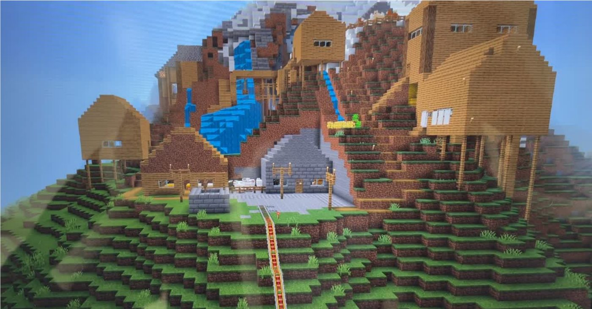
A mountain town shaped by the terrain and climate the group was given.
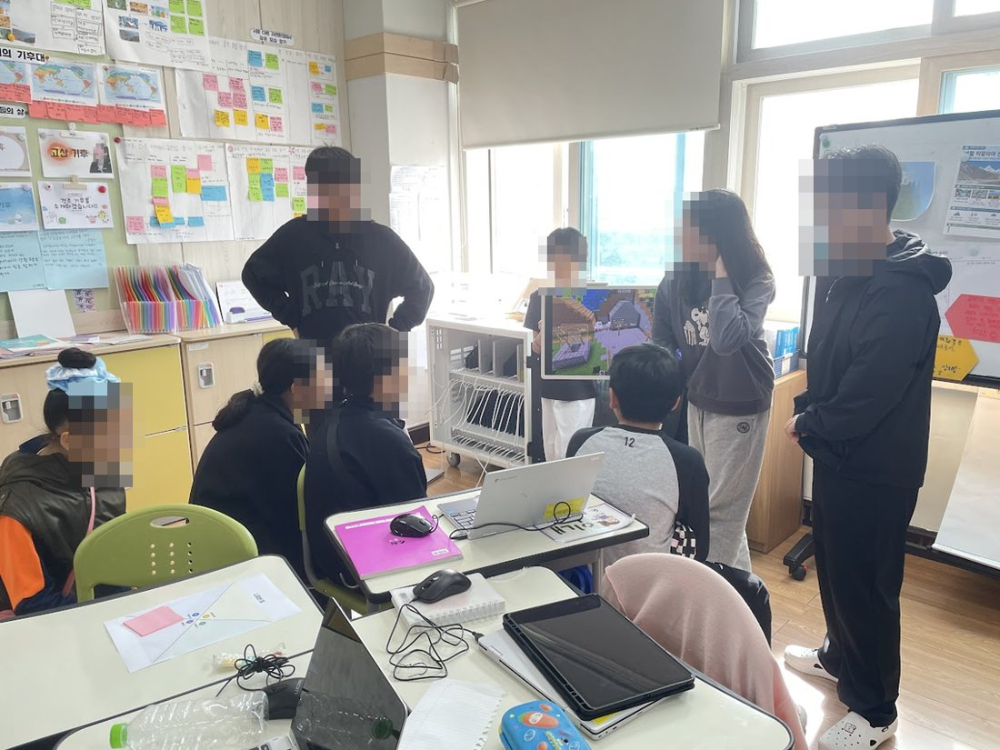
Gathering around a group's Minecraft build.
2026 · Grade 6 · Summer
Inventions That Carry Value
가치-잇(IT)는 발명
Students asked how values shape inventions, learned input–process–output by building micro:bit robots, then designed inventions for real people in their community, such as QR emergency-information tags for older adults.
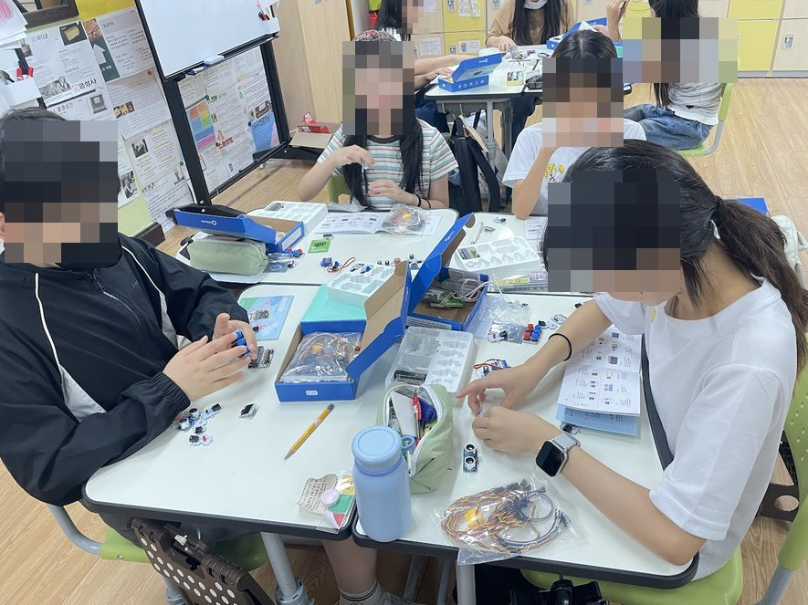
Figuring out unfamiliar parts from the manual.
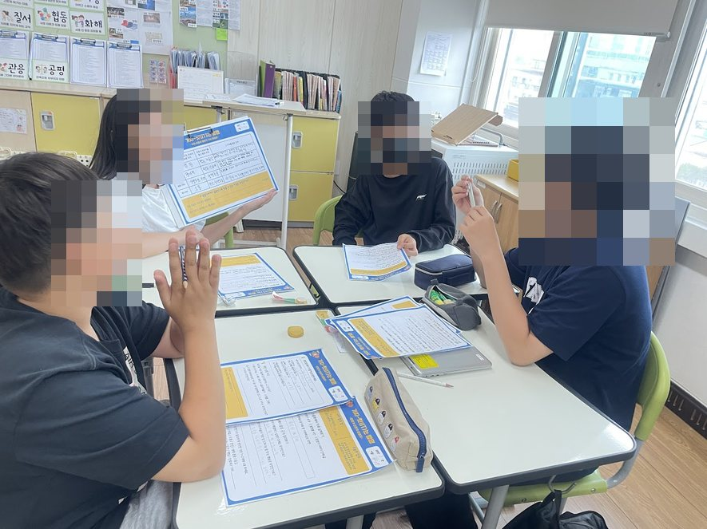
Finding the values behind famous inventions.
2025 · Grade 1 · Winter
Age Eight: Life Blooms with Imagination
여덟 살, 상상으로 피어나는 인생은 아름다워
First graders found stories in their own lives and imaginations, tried telling them through voice, movement, and pictures, and worked in teams to stage puppet shows.
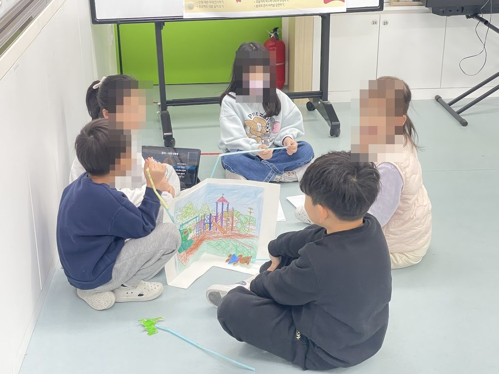
Making a backdrop and rehearsing the puppet show.
2025 · Grade 1 · Fall
A Promise to Protect the Future
미래를 지키는 약속
First graders explored what they could do for the planet: sorting and reusing bottle caps, melting plastic into keyrings, a week of no-leftover lunches, and plogging around the neighborhood.
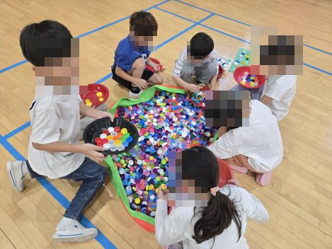
Sorting bottle caps for reuse.
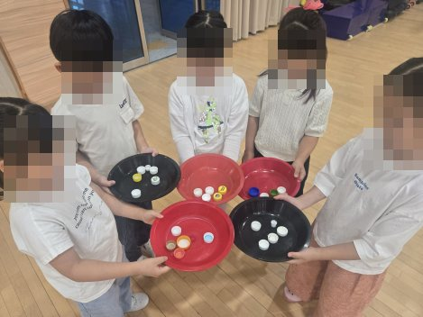
Comparing what each team collected.
2025 · Grade 1 · Summer
Eolssu! Korea
얼쑤! 대한민국
Students asked what represents Korea and what those symbols mean, explored how people live through clothing, food, hanok houses, and traditional games, then became "Korea ambassadors" and ran an expo for the school.
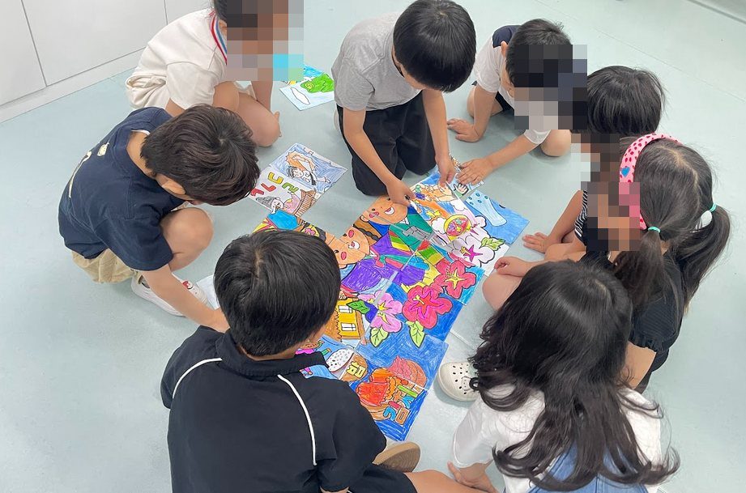
A team drawing of Korean culture.
2025 · Grade 1 · Spring
Treasure Hunt at Our School
우리학교 보물찾기
New first graders explored the people and places of their school, created class symbols, and worked out the rules that keep school life safe and fun, ending with a video introducing their school.
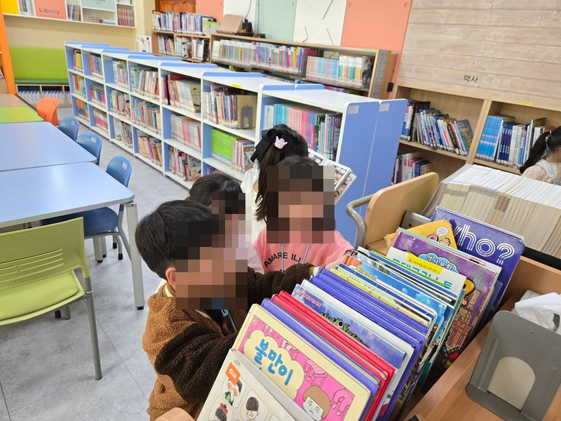
Learning how to use the school library.
2024 · Grade 3 · Winter
Turn Down the Noise!
소리 프로젝트 · 소음을 줄이는 구조물 만들기
Starting from noise that bothered them at home and school, students asked why sound happens, how it travels, and when sound becomes noise. Then they built noise-reducing structures, such as quiet slippers for apartment floors, and tested them with a decibel meter.
2024 · Grade 3 · Fall
Introducing My Family in 2054
2054년, 나의 가족을 소개합니다!
Through the lens of change, students traced how family roles have shifted, imagined the families they hope for, and wrote about them so a reader could follow their experience.
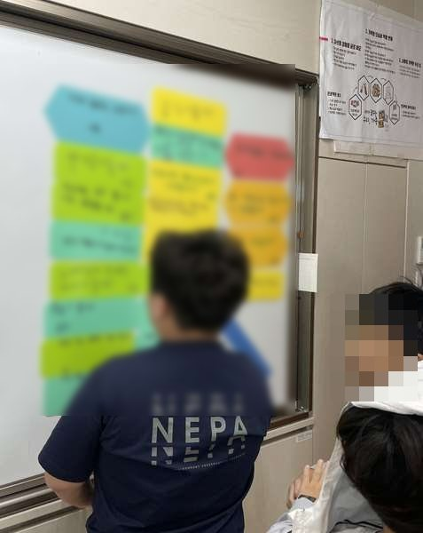
Students build the unit's question wall at the start.
2024 · Grade 3 · Summer
Let's Build It Together! A Future City for Everyone
함께 만들어요! 모두를 위한 미래도시
Students traced how transportation and communication have changed daily life, tried out emerging technologies, and designed transport and communication devices for a future city where people, animals, and nature can live together, such as a device that keeps animals safe in wildlife corridors.
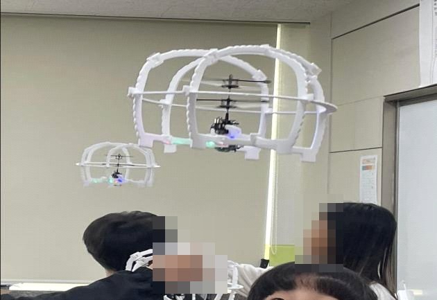
Trying out future transportation.
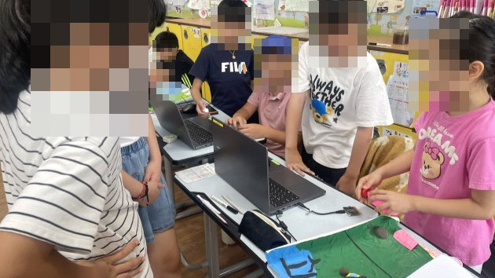
Testing a design with classmates.
2024 · Grade 3 · Spring
Our Story of Nam-gu, Daegu
우리가 알아보는 대구 남구 이야기
Students drew the hometown they imagined, learned to locate key places on real maps, and read local folktales and heritage sites for what they say about the community.
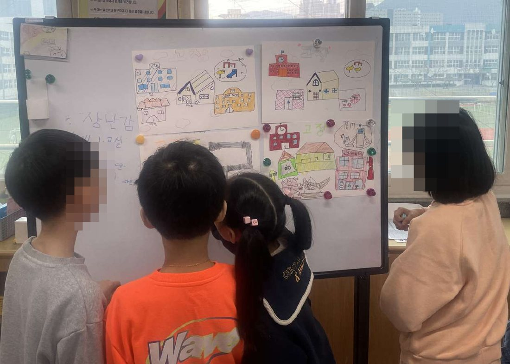
Comparing each other's hometown maps.
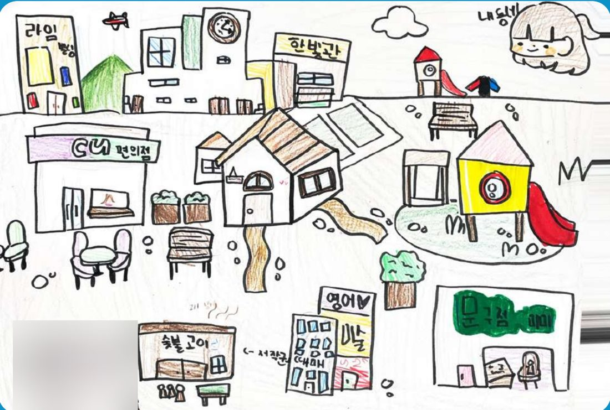
"The hometown I imagine."
2023 · Grade 4 · Winter
How Is Our Society Changing?
사회 변화 프로젝트
Students investigated an aging society, the information age, and multiculturalism, graphed the trends, proposed policies, coded robots to help older adults, and ran a technology fair with generative AI and VR booths.
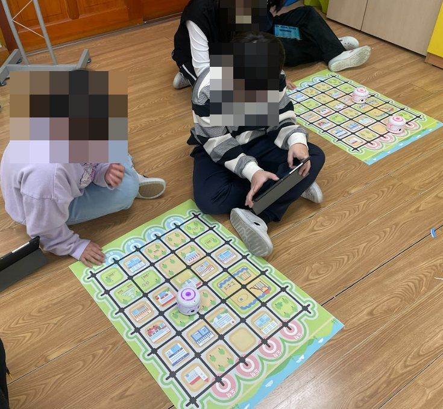
Programming a self-driving robot for rural seniors.
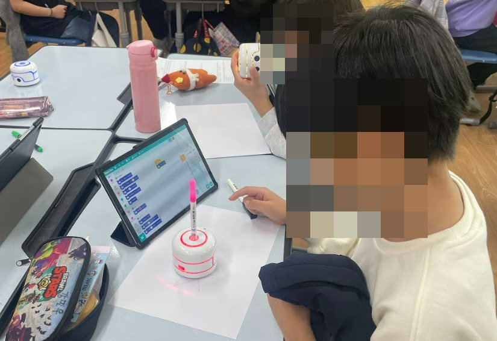
Coding an elder-care robot on a tablet.
2023 · Grade 4 · Fall
City Lights, Village Starlight
도시의 불빛, 촌락의 별빛
When rural Gunwi County joined the city of Daegu in 2023, students asked how cities and villages depend on each other. They mapped each area's strengths, traded in a mock market, and designed better places to live in Minecraft.
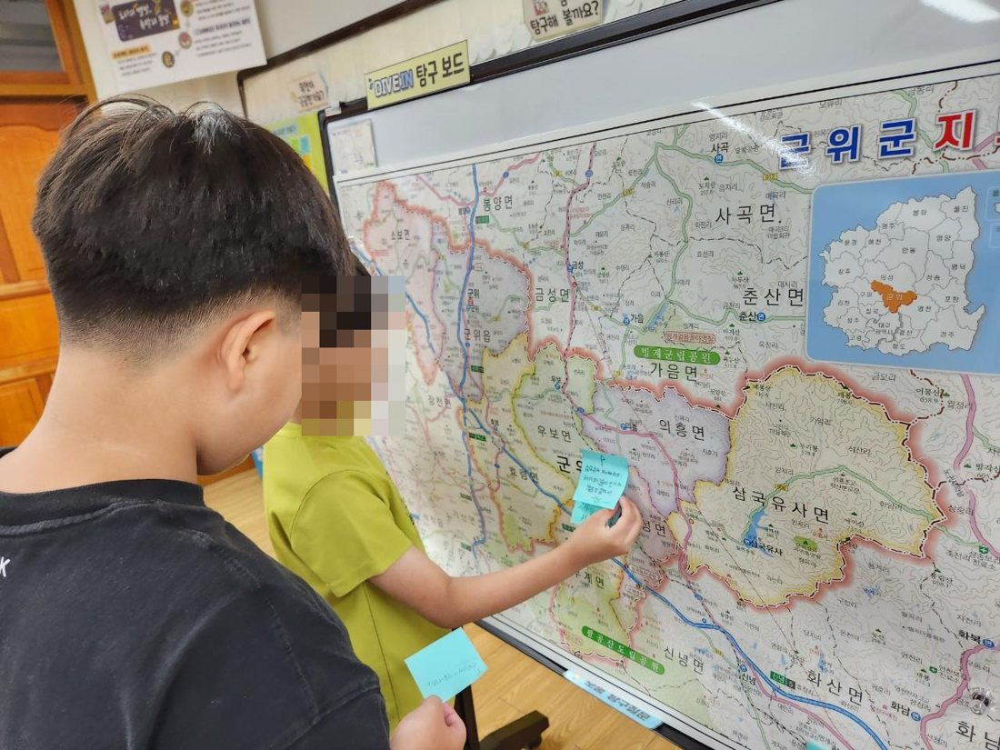
Finding the centers of Gunwi County on the map.
Photos shared with guardian consent. Faces and names are blurred.
Public school teacher since 2023, designing curricula and tools with teachers, researchers, and an EdTech company. Elementary Teacher Certificate, Grade I (2026).
Public Elementary School Teacher, Namdaegu Elementary School2023–nowGrade-level lead for concept-based inquiry projects with AI-supported materials, performance tasks, and formative assessment.
Teacher Design Partner, VIDTOMI2024–nowCo-designing a self-directed microlearning platform with Prof. Young Soo Song; classroom-testing features and adding inquiry routines and mastery-based enrichment.
Curriculum Developer, DNUE Gifted Education Center2024–nowCo-developed and taught an AI-supported, inquiry-based CS curriculum for gifted elementary students.
Contributor, AI Education Research Group, Korea Education and Research Information Service2024–2025Co-developed and field-tested teacher guides for AI tools.
Co-Investigator, ALL-CARE Project2024Co-designed an AI courseware-based inquiry model for social studies; a mixed-methods study with 42 students found significant gains in collaborative problem solving.
Invited Lecturer and School Consultant2024–nowWorkshops on AI-supported, inquiry-based instruction for education offices and universities, including Korea National University of Education; an online Google Apps Script course for Korea National Open University.
Founder and Mentor, Sustainable SW/AI Education Volunteer Program2023–nowA monthly SW/AI program for children in residential care, co-taught with preservice teachers.
Awards
Superintendent's Award (team), Lesson Sharing Competition2026Nambu Office of Education, Daegu
Minister of Education Award (Top Prize), 18th Digital Education Research Competition2024For the ALL-CARE Project's AI-supported inquiry learning model
Minister of Science and ICT Award (Top Prize), SW/AI Eduthon2021
KOFAC President's Award (Second Place), SW/AI Eduthon2020